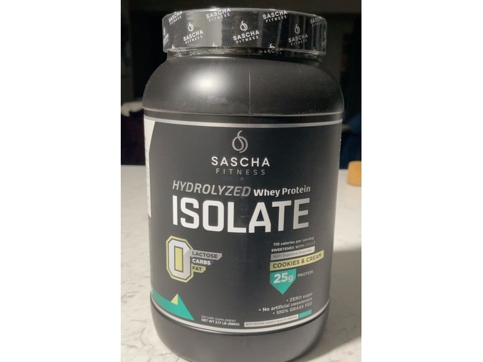

Nabiał i jaja
Izolat Białka (WPI)
Izolat Białka (WPI): 85 g białka, 360 kcal, 2 g węglowodanów i 1 g tłuszczu na 100 g. Kategoria: Nabiał i jaja.
Kalorie360 kcalna 100 g
Białko / proteiny85 g
Węglowodany2 g
Tłuszcz1 g
Cena (szac.)~13,97 złza 100 g
Ceny zaktualizowano: maj 2026 (szacunek — ceny w popularnych supermarketach)
Porcja: miarka (30g)
| Kalorie | 108 kcal |
|---|---|
| Białko | 25.5 g |
| Węglowodany | 0.6 g |
| Tłuszcz | 0.3 g |
| Cena (szac.) | ~4,19 zł |
Szczegółowe składniki odżywcze na 100 g
| Wartość energetyczna (kalorie) | 360 kcal |
|---|---|
| Białko (proteiny) | 85 g |
| Węglowodany | 2 g |
| Tłuszcz | 1 g |
| Tłuszcze nasycone | 0.4 g |
| Tłuszcze nienasycone | 0.6 g |
| Witaminy i minerały | Wapń, Witamina B2, Fosfor |
| Współczynnik kcal / 1 g białka | 4.2 |
| Cena produktu (szac. za 100 g) | ~13,97 zł |
| Cena za 100 g białka (szac.) | ~16,43 zł |